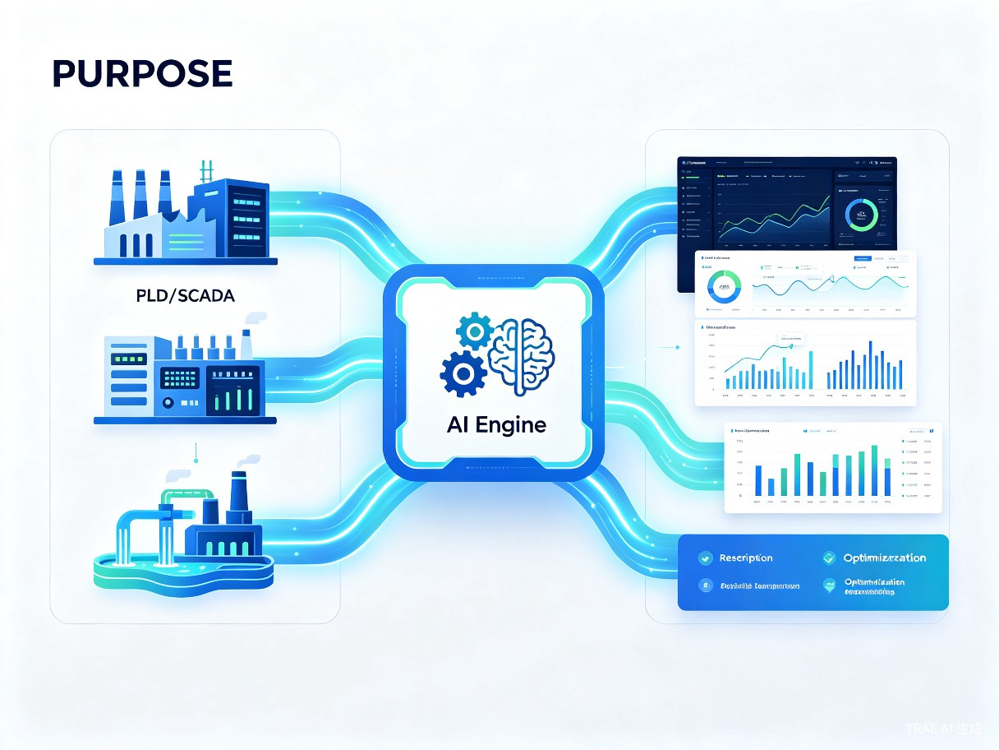
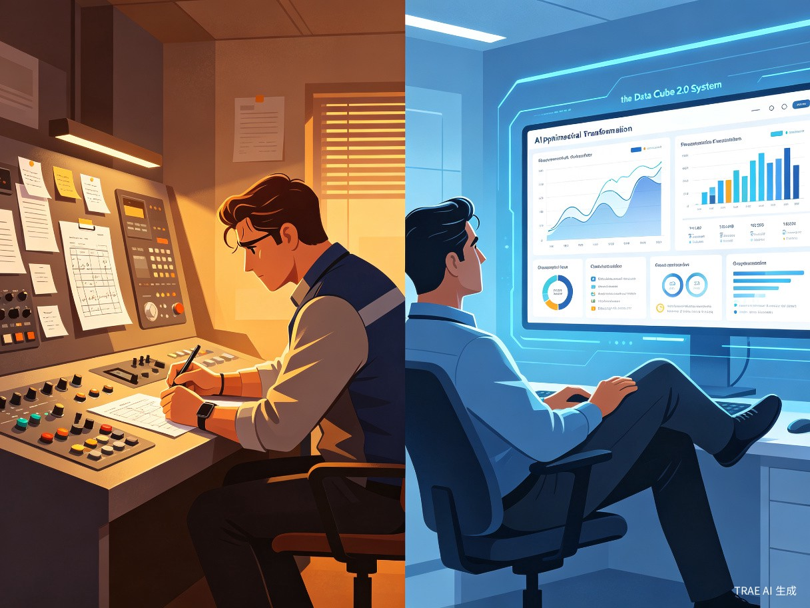

零成本让 PLC 数据活起来，把沉睡的历史数据转化为未来24小时的最优调度方案
成千上万的工厂、水厂虽然上了 PLC 和 SCADA 自动化系统，但数据大多"躺在服务器里吃灰"。系统只解决了"远程看"和"远程启停"，没解决"如何高效运行"。几百万的自动化投入，没有真正转化为降本增效的成果。
海量历史数据仅用于事后查看和报表，没有变成"决策依据"，数据资产严重浪费。
关键操作仍依赖调度员个人经验，决策质量不稳定，且无法规模化复制和传承。
系统投资巨大，但运行效率和能耗优化空间没有被数据化地挖掘出来。
核心工业场景中，调度决策本应基于数据分析，但数据和决策之间存在鸿沟。同时，老师傅的经验无法被系统化传承和复制。
我们希望构建一个"虚拟大脑"，把沉睡的历史数据激活，让电脑从"工具"变成能给出最优方案的"同事"。
这个产品的开发者是拥有多年工作经验的生产调度人员，深知一线调度工作的痛点与需求。这个灵感来源于一个真实的供水调度场景——三级加压泵站系统：调度员每天需要决定一级、二级、三级泵站的机组启停组合，涉及压力、流量、水位等多维约束，仅凭经验难以做到全局最优。
一个通过分析已有 PLC 历史数据，自动为工业场景提供未来24小时最优运行方案的智能调度系统。不增加任何硬件投入，利用现有数据资产进行二次开发。
读取 PLC/SCADA 历史数据
自动学习管网特性与用水规律
多方案并行模拟预测
推荐最优调度策略

以基准时刻为中心，构建历史240小时（实测）+ 未来120小时（预测）的时间立方体，每个切片独立存储全量状态。
支持26个独立方案（Plan A~Z），调度员可切换不同机组工况，系统自动计算未来管网运行状态，方便对比决策。
基于管网阻力S值、泵特性曲线等物理参数，结合末端压力实测进行S-Q-Q²精确建模，模拟真实管网运行。
用户用水量采用多时间维度（7日均值、昨日值、近4小时均值）加权预测，对气温变化、用水高峰等短期波动反应灵敏。
以某供水系统的三级加压泵站为例，展示数据立方2.0如何解决实际调度难题。

| 挑战 | 描述 | 传统方式 | 数据立方2.0 |
|---|---|---|---|
| 机组组合选择 | 6台机组，多种大小车组合 | 凭经验选择 | 多方案模拟对比 |
| 压力平衡 | 出水压力需在安全范围 | 事后调整 | 提前120h预测 |
| 水池水位 | 避免溢出或枯竭 | 人工巡检 | 自动水位曲线预警 |
| 能耗优化 | 不同组合能耗差异大 | 无量化对比 | 方案间能耗排序 |
flowchart TB
A[PLC 历史数据
流量/压力/水位/Combo] --> B[数据清洗与特征工程]
B --> C{预测模型}
C --> D[用户用水量预测
7日+昨日+4h加权]
C --> E[管网阻力模型
S-Q-Q² 法]
C --> F[泵特性曲线
Q-H 查表]
D --> G[流量分配]
E --> G
G --> H[Combo 匹配
与压力查询]
F --> H
H --> I[清水池水位预测]
H --> J[出水压力预测]
I --> K[方案评估与推荐]
J --> K
K --> L[最优调度方案输出]
面向已部署 PLC、SCADA 等自动化系统的工业企业，核心用户包括：
泵站调度、管网压力平衡、水池水位管理
机组负荷分配、冷却系统优化
反应釜温度控制、物料配比优化
高炉鼓风调度、能源平衡
产线节拍优化、设备启停调度
管网压力调节、负荷预测
不增加任何硬件投入，利用已有 PLC 历史数据进行二次开发，把"事后记录"升级为"事前预测"。
提前预测未来24小时管网状态，让调度员从"发现问题再处理"变为"提前规划最优方案"。
将个人经验转化为数据模型，不因人员变动而丢失，实现调度知识的系统化沉淀。
通过多方案模拟对比，找到能耗最低的运行策略，直接实现降本增效。
基于成熟的技术栈构建，确保系统稳定可靠、易于部署维护。
| 指标 | 参数 |
|---|---|
| 预测时长 | 未来 120 小时（5天） |
| 历史数据窗口 | 过去 240 小时（10天） |
| 并行方案数 | 最多 26 个（Plan A~Z） |
| 预测精度 | 基于物理模型 + 数据驱动混合 |
| 计算延迟 | 单方案 < 1 秒 |
数据立方2.0 — 不只是看数据，而是让数据为你思考。